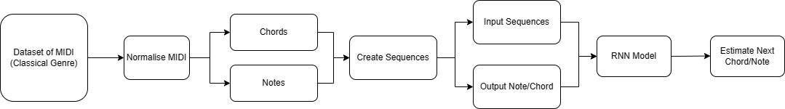
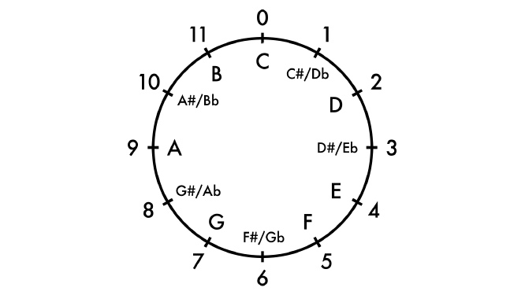
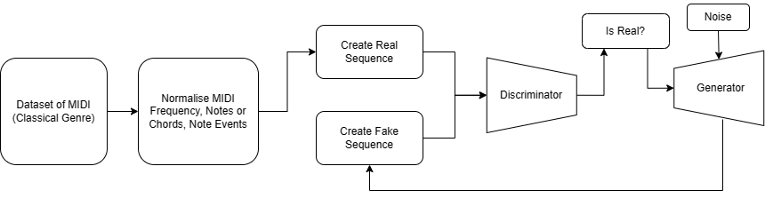
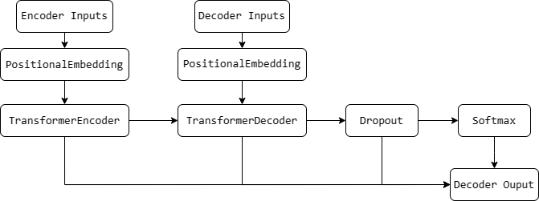

Music production
- is complex and time-consuming.
- is inaccessible to beginners.
- is expensive.
- requires a lot of knowledge and expertise
Music production
Similar to other industries, the musical sector can leverage technological innovation and the latest advancements in AI to address:
The project will focus on the development of a music generation system that leverages advanced machine learning techniques to automate the music production process; with a focus on classical cantatas.

I selected these technologies because of their versatility, scalability, performance, and large community following.
- Keras was utilised in CSC3831.
- MIDI is a standard format for music files and has several Python libraries for normalising data.
- MIDI files do not contain the recorded sound but rather the instructions on what note to play and when.
- MIDI files contain header and track chunks.
- MIDI files are made up of "Note On" and "Note Off" events.
There are many papers that have been written on the subject of music generation using machine learning. The most notable papers to my project are:
- Generate Music with a RNN [1] (RNN-Pitch Model)
- Music Transformer: Generating Music with Long-Term Structure [2] (Transformer Model)
- MuseGAN: Multi-Track Sequential Generative Adversarial Networks for Symbolic Music Generation and Accompaniment [3] (GAN and Multi-Track GAN Model)

The project follows the Waterfall Model:
1. Research and collecting requirements
2. Model design and coding
3. Model finalization via testing and tweaking
The RNN-Pitch Model works by estimating three values: pitch, duration, and step.

[[pitch, step, duration], [60, 0.25, 0.5], [67, 0.25, 0.5], [69, 0.15, 0.5], ...]
[61, 0, 0.5]
The primary issue with the RNN-Pitch Model was that it was unable to accurately predict timing intervals between notes (step and duration).
The RNN-Chord Model fixed the flaws in the RNN-Pitch model (timing intervals) by converting song data into chords and notes.
How are chords represented as they are multiple notes played at the same time?
['B4', 'A4', 'A2', 'E3', '0.4', '10.0', '0.5', '0.4.7', ...]
Notes are represented in the "Standard Note Name" format.
['B4', 'A4', 'A2', 'E3', ...]

Retrieved From: Mickaël Tits [7]
Chords utilise "Pitch Class" (0-11) to represent notes. This ensures that the model only has to consider 0-11 and not all 88 possibles notes and their permutations.
[..., '0.4', '10.0', '0.5', '0.4.7', ...]

Retrieved From: David Kulma [6]
MIDI Data was normalised in three different ways: Notes and Chords, Frequency, and Note Events. The different normalisation techniques were attempted as training GAN Models can lead to issues such as mode collapse and tend to be finicky.
Notes and Chords utilised the same principles as in the RNN-Chord Model.
Frequency converted notes into their associated frequency.

Retrieved From: Tontechnik-Rechner [5]
MIDI Files Consist of Note Events (NOTE ON and NOTE OFF).

Retrieved From: Audiolabs-Erlangen [4]
[[note on/off, pitch, ticks], [1, 67, 60], [1, 55, 0], [1, 43, 0], [0, 67, 55], ...]
The Transformer Model utilises sequence-to-sequence (notes and chords) techniques to predict the next sequence of notes.

['B4', 'A4', 'A2', 'E3', '0.4', '10.0', '0.5', '0.4.7', ...]
[1, 2, 3, 4, 5, 6, 7, 8, ...]
[9, 10, 11, 12, 13, 14, 15, 16, ...]
['B2', 'A1', 'A3', 'E2', '0.7', '5.3', '5.9', '1.3.10', ...]
- Modify the GAN model to work with multiple instruments.
- Continue working on the dissertation writeup (Currently at ~10,000 words).
- Finalise poster and submit before the end of spring break.
- Finished the RNN Models (RNN-Pitch & Chord)
- Finished the GAN Model
- Finished the Transformer Model
- Began writing the paper
[1] “Generate music with an RNN | TensorFlow Core,” TensorFlow. https://www.tensorflow.org/tutorials/audio/music_generation#setup.
[2] “Music Transformer: Generating Music with Long-Term Structure,” research.google. https://research.google/pubs/music-transformer-generating-music-with-long-term-structure/.
[3] H.-W. Dong, W.-Y. Hsiao, L.-C. Yang, and Y.-H. Yang, “MuseGAN: Multi-track Sequential Generative Adversarial Networks for Symbolic Music Generation and Accompaniment,” arXiv.org, 2017. https://arxiv.org/abs/1709.06298.
[4] A. Labs, FMP_C1_F13, MIDI Note Event Representation. Available: https://www.audiolabs-erlangen.de/resources/MIR/FMP/data/C1/FMP_C1_F13.png
[5] B. Rechner, Tontechnik-Rechner, MIDI Note Names. Available: https://sengpielaudio.com/calculator-notenames
[6] D. Kulma, David Kulma, Pitch Class. Available: https://davidkulma.com/musictheory/integers
[7] M. Tits, ResearchGate, MIDI Note Numbers. Available: https://www.researchgate.net/figure/88-notes-classical-keyboard-Note-names-and-MIDI-numbers_fig8_283460243
[8] Builtin.com, 2024. https://builtin.com/sites/www.builtin.com/files/styles/ckeditor_optimize/public/inline-images/2_waterfall%20methodology.png.